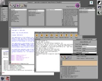

ProjectCenter
ProjectCenter
[ Introduction | State | Documentation | Download ProjectCenter | Related links ]
Introduction
ProjectCenter is GNUstep's integrated development
environment (IDE) and allows a rapid development and easy managment of


Supporting the project types 'Application', 'Bundle', 'Library', 'Tool', and 'Aggregate', ProjectCenter automatically creates the project makefiles and aids you in the process of editing, project compilation, package building and debugging. In the future, built-in CVS support will be available, too.
ProjectCenter is inspired by NeXT's original Project Builder and is
the equivalent of XCode. It
assists you in starting new projects and lets you manage your project
files
using a intuitive and well ordered graphical user interface.
ProjectCenter, differently from current Apple XCode, does create
directly makefiles which can
be built form the command line or by an automated tool. This is very
convenient also for packagers and build farms since the requisite to
build the project is only gnustep-make and not PC itself.
Serg Stoyan (stoyan255 at ukr dot net) is the current maintainer of ProjectCenter. Please contact him if you would like volunteer to improve ProjectCenter, report bugs on the standard bug tracker. The original author of ProjectCenter, Philippe C.D. Robert, no longer actively contributes to the application.
Over a decade ago, NeXT Computer Inc. revolutionized application
development by making two great developer tools available for their
operation system OPENSTEP: Project Builder and Interface Builder.
These applications made application development much easier and faster
and took NeXT ahead of the other computer manufacturers and
operating system vendors. GNUstep continues in this tradition by
offering ProjectCenter and Gorm.
State
ProjectCenter is a fully application, although it is still
evolving. Project creation and management is fully supported.
Work is concentrating on debugging support, improving the editor (0.6
series supports undoing, improved syntax and parentheses
highlighting and editor detaching) and resource and language management.
Documentation
For installation help, please refer to the INSTALL file included in the ProjectCenter package or the GNUstep Build Guide.
For a basic tutorial on GNUstep development, with Gorm and ProjectCenter, you should read Pierre-Yves Rivaille's tutorial on Gorm and ProjectCenter.
Download ProjectCenter
The last offically released version at the time of writing is 0.6.1 (13 Jun 2012), which you can download here.
Related Links
GNUstep Tutorials on Makefiles, base and gui programming and more.
GNUstep Library Suite: Reference about the different GNUstep libraries.